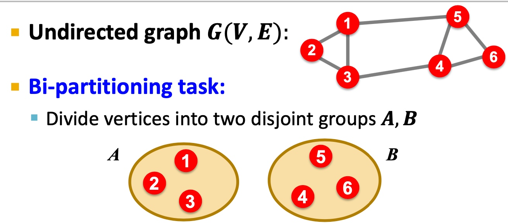
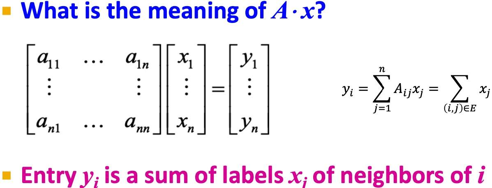
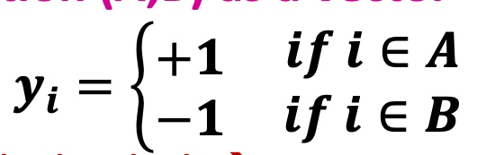
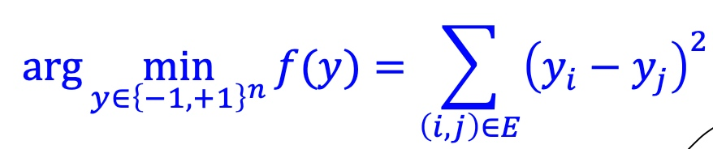
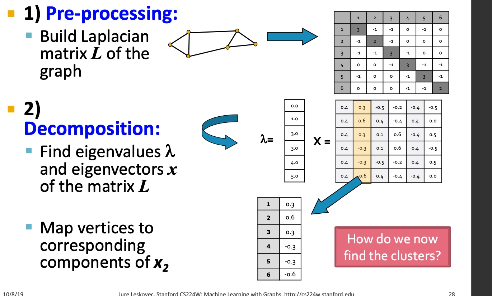
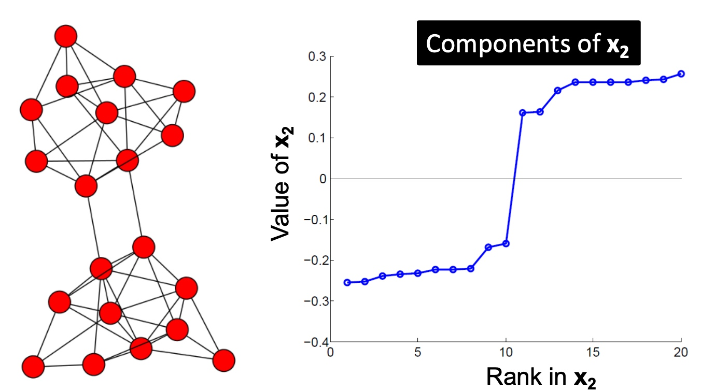
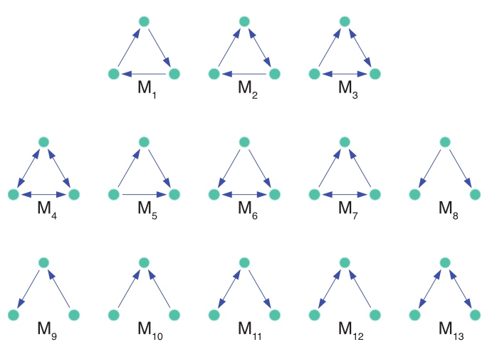
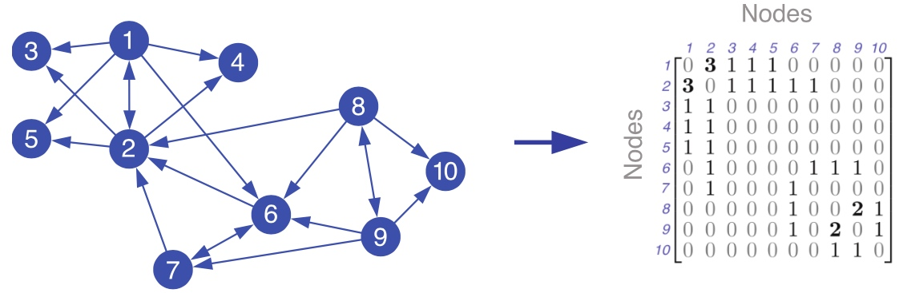
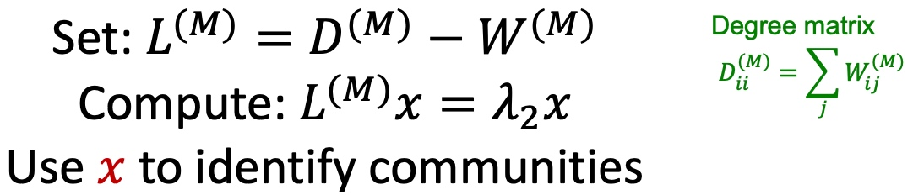

- Graph Partitioning
- Spectral Graph Partitioning
- Spectral Clustering Algorithm
- Motif-Based SPectral Clustering
- Summary
Graph Partitioning
何谓graph partitioning, 如下图，给定无向图\(G(V,E)\)， 将这些节点分为两个组：

逻辑很简单，但是难点在于：
- 如何定义一个尺度，来保证图的切分是合理的：
- 组内成员连接尽可能多；
- 组与组之间连接尽可能少；
- 如何高效地识别这些分区；
Criterion
Cut(A,B): 如下图，图当中，两个点分别在两个分组的边的数量；

Minimum-cut
最小化图分组间的连接（如果有权重，则考虑权重）：
\[arg min_{A, B}\ Cut(A,B) \]这样会存问题：
- 仅仅考虑图当中分组的外部连接；
- 未考虑图中分组的内部连接；
因此，在下面图中，会出现，假如是minimum cut不是optimal cut

Conductance
与Minimum-cut逻辑不一样， Conductance不仅仅考虑分组间的连接， 也考虑了分割组内的“体积块”， 保证分割后得到的块更均衡，Conductance指标如下：
\[ \phi(A, B)=\frac{cut(A,B)}{min(vol(A), vol(B))} \]其中\(vol(A)\)指分组块A内节点所有的权重度之和；
但是，得到最好的Conductance是一个np难题。
Spectral Graph Partitioning
假定A为无连接图G的链接矩阵表示，如(i,j)中存在边，则\(A_{ij}=1\)，否则为0；
假定x是维度为n的向量\((x_1, ..., x_n)\)，我们认为他是图当中每个节点的一种标签；
那么\(A*x\)的意义是， 如下图， \(y_i\)表示i的邻居节点与对应标签和：

令\(Ax=\lambda x\)，可以得到特征值：\(\lambda_i\), 和对应的特征向量\(x_i\)。对于图G， spectral(谱)定义为对应特征值\({\lambda_1, \lambda_2, ..., \lambda_n}\)，其\(\lambda_1 \leq \lambda_2 \leq ... \leq \lambda_n\) 对应的特征向量组\({x_i, x_2, ..., x_n}\)；
** d-Regular Graph 举例 **
假定图当中每个节点的度均为\(d\)，且G是连通的，即称为\(d-Regular Graph\)。
假定\(x = (1,1,...,1)\)，那么\(Ax = (d, d, ..., d) = \lambda x\)， 故会有对应的特征对：
且d是A最大的特征值（证明课程未讲）
d-Regular Graph on 2 Components
假定G有两个部分， 每个部分均为d-Regular Graph，
那么必然存在：
\(x^{'}=(1,...,1,0,...,0)^T\)， \(A x^{'}=(d,...,d,0,...,0)^T\)
\(x^{''}=(0,...,0,1,...,1)^T\)， \(A x^{'}=(0,...,0,d,...,d)^T\)
所以必然存在两个特征值\(\lambda_{n} = \lambda_{n-1}\)， 推广起来，如果图G中两个部分互相连通，如下图， 则最大的特征值很近似：

推广， 这里有点没有太理解：

Matrix Representations
邻接矩阵A
- 对称矩阵；
- n个实数特征值；
- 特征向量均为实数向量且正交:

度矩阵
- 对角矩阵；
- \(D=[d_{ii}]\), \(d_{ii}\) 表示节点i的度；

Laplacian matrix

Laplacian matrix 有以下特点：
- 令x=(1,...,1)则\(L*x=0\)， 故\(\lambda=\lambda_{1}=0\)；
- L的特征值均为非负实数；
- L的特征向量均为实数向量，且正交；
- 对于所有x，\(x^{T}Lx=\sum_{ij} L_{ij}x_{i}x_{j} \geq 0\)；
- L能够表示为\(L = N^{T} N\)
Find Optimal Cut
分组表示(A,B)为一个向量，其中

问题转换为寻找最小化各部分间连接：

相关证明间slide，这里老师没有做过多解读；
Spectral Clustering Algorithm
基础方法
如下图：主要包括三个步骤：
- 预处理：构造图的表示， 包括Laplacian Matrix；
- 矩阵分解：
- 计算Laplacian Matrix的所有的特征值与特征向量；
- 将节点使用特征向量表示（对应\(\lambda_2\)的特征向量\(x_2\)）；

- 聚类， 将节点的特征表示，排序， 按大于0与小于来进行拆分：

以下是多个实例， 看起来使用\(\lambda_{2}\)对应的特征向量\(x_2\)来切分是比较合适的：


k-Way Spectral Clustering
如何将图切分为k个聚类呢？
- 递归利用二分算法，将图进行划分。但是递归方法效率比较低，且比较不稳定；
- 使用降维方法，将节点表示为低维度的向量表示，然后利用k-mean类似的方法对节点进行聚类；
那么如何选择合适的k呢，如下图，计算连续的特征值之间的差值，选择差异最大的即为应该选择的k？

Motif-Based SPectral Clustering
是否能够通过专有的pattern 来进行聚类呢？上一篇文章有提到motif， 如下图：

给定motif，是否能够得到相应地聚类结果：

答案当然是可以的， 而且也是复用前面的逻辑
Motif Conductance
和上文中， 按边来切分逻辑不通， conductance指标，应该表征为motif的相关指标，如下：

这里给出一个计算的例子， 如下图， 该出模式分子为切分经过的该模式数量， 分母为该模式覆盖的所有节点数量：

所以motif的谱聚类就变成了给定图G与Motif结构来找到\(\phi_{M}(S)最小的\)， 很不幸， 找到最小化motif conductance也是一个np问题；
同样地，也专门提出了解决motif 谱聚类的方法：
- 给定图G和motif M；
- 按M和给定的G，生成新的权重图\(W_{(M)}\);
- 在新的图上应用spectral clustering方法；
- 输出对应的类簇；
大致过程如下图所示：

具体过程如下：
-
给定图G与motif M， 计算权重图\(W^(M)\)：
 -
应用谱聚类， 计算其Laplacian Matrix的特征值与特征向量，得到第二小的特征向量，：
 -
按升序对第二小特征值的对应的特征向量进行排序（对应的节点ID需要保存以计算motif conductance）， 以\(S_r = {x_1, ...,x_r}\)计算motif conductance值，选择最小地的值即为划分点， 如下图，1,2,3,4,5为一个类：

Summary
本章我们学习了谱聚类相关的工作， 首先，讲了关于表征切分图的指标cut(A,B)以及conductance，如何切分图以及为什么切分图是一个np难题，然后提出了利用谱聚类的方法来解决该问题，从而学习到了degree matrix, Laplacian matrix等概念； 而后提出是否有按motif来进行图聚类的方法， 并基于谱聚类的方法来解决来转换原图为带权重的图来解决；